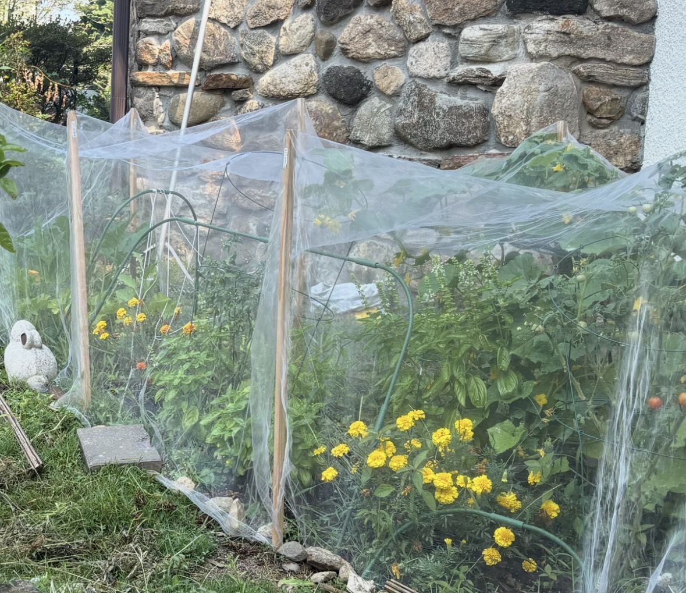
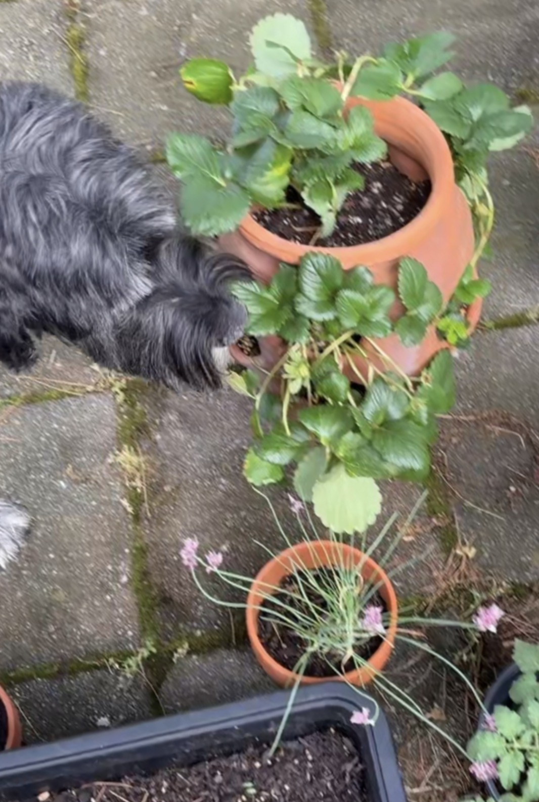

In my free time, I love working in my garden. Maintaining it is very important to me, as I enjoy experimenting through trial and error to learn what helps different plants grow. Gardening has taught me patience, responsibility, and consistency, while also allowing me to learn about a variety of plants and watching them grow and develop over time. It is especially rewarding to see the results of my efforts when I can harvest fruits and vegetables I've cared for. The image on the left was photographed last year when my vegetable garden was at the height of its harvest. While the image on the right is a photograph of my dog smelling some of the things growing in my garden this year, as we patiently wait for the garden to take full bloom.
My First Garden Photo


Visit My Garden Blog: Garden Blog